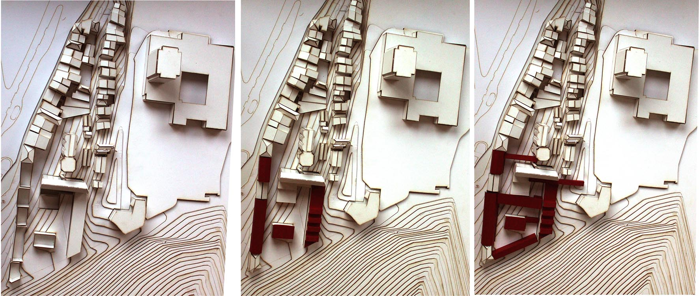
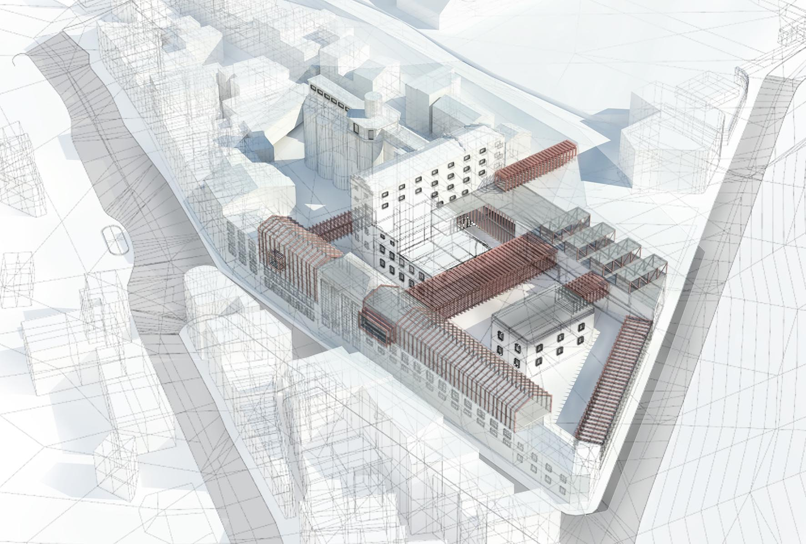
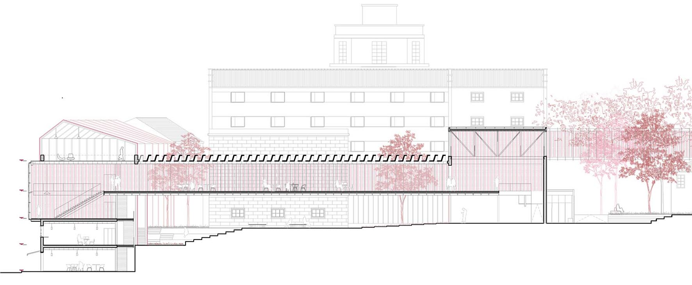
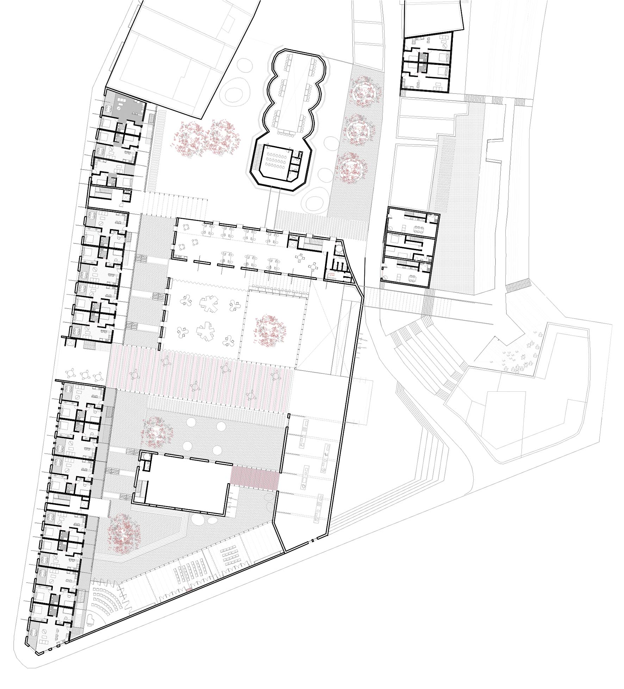
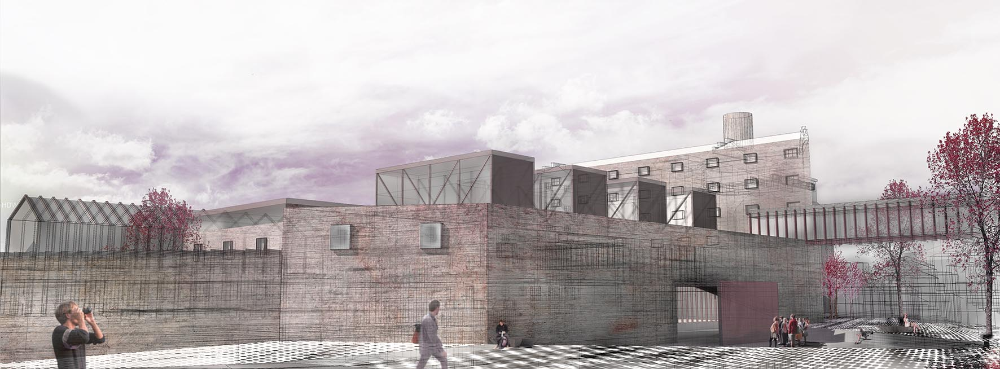
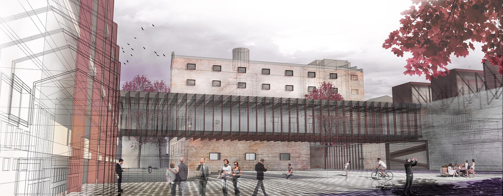

-

Entwurfsentwicklungsmodell

Städtebauliches Kontext

Schnitt Haupt Füßgängerbrücke

Zugangsstockwerk

Haupteingang

Ansicht des Innenhofes
Auf dem Grundstück von La Panificadora in der Stadt Vigo werden drei Hauptprobleme erkannt: 1. der verkommene, ja sogar baufällige Zustand der bestehenden Bauten; 2. das Grundstück als eine isolierte, abgeschottete Insel im städtischen Kontext; und 3. der große Höhenunterschied zwischen dem Rathausplatz und der Rua (Straße) Falperra.
Um diese Schwierigkeiten zu bewältigen und die gesamte Anlage neu zu beleben, werden verschiedene Nutzungen vorgeschlagen, die das Gelände zu einem attraktiven Aktivitätspol für die Stadt machen. Die neuen Nutzungen werden in den vorhandenen Gebäuden untergebracht, die sanierbar und wieder verwendbar sind, während die baufälligen Teile abgerissen werden, sodass in der Anlage Platz entsteht für einen durchgehenden öffentlichen Raum im Innenbereich des Grundstücks.
Die Gebäudesanierung wird ergänzt durch 3 Strategien des Bauvorhabens:
1.- Erstens Gestaltung von neuen Dächern mit Dachfenstern anstelle der abgerissenen Dächer in den für Ausstellungen bestimmten Räumen.
2.- Zweitens die Anlage von 5 Stegen als Querverbindung zwischen den sanierten Gebäuden; damit werden Nutzungen und Räume zusammengeführt, um den Fluss und die Entwicklung gemeinsamer Aktivitäten anzustoßen.
3.- Und schließlich eine Erweiterung mit Metallrippen über den vorhandenen Bauten der Rua Falperra, um Sozialwohnungen unterzubringen.
Im Rahmen der konkreten Bauplanung werden Nutzungen vorgeschlagen, welche die Integration und Revitalisierung des Häuserblocks und seiner urbanen Umgebung potenzieren. So wird die Planung unter Beteiligung des Nutzers und mit komplementären Aktivitäten diversifiziert, was Nutzern und Besuchern die Möglichkeit gibt, sich in die Forschungs-, Entwicklungs- und Beteiligungsprozesse einzubringen. An erster Stelle werden Arbeitsräume eingerichtet, die den neuen Arbeitsmodellen entsprechen, also Coworking-Bereiche und Gründerzentren. Zweitens wird diese auf „Kreation“ abzielende Planung durch neue Räume für die Ausstellung und Kommunikation der ausgeführten Projekte ergänzt: Mehrzweckräume für Schulungen und Seminare; Säle für Ausstellungen, Konzerte und Performances sowie Produktionswerkstätten.
Das ehemalige Getreidesilo wird als Lager für Information vorgesehen, denn es beherbergt die „Theken“ - Bibliothek, Comic-Thek, Videothek usw. - neben Lesesälen und Projektionsräumen.